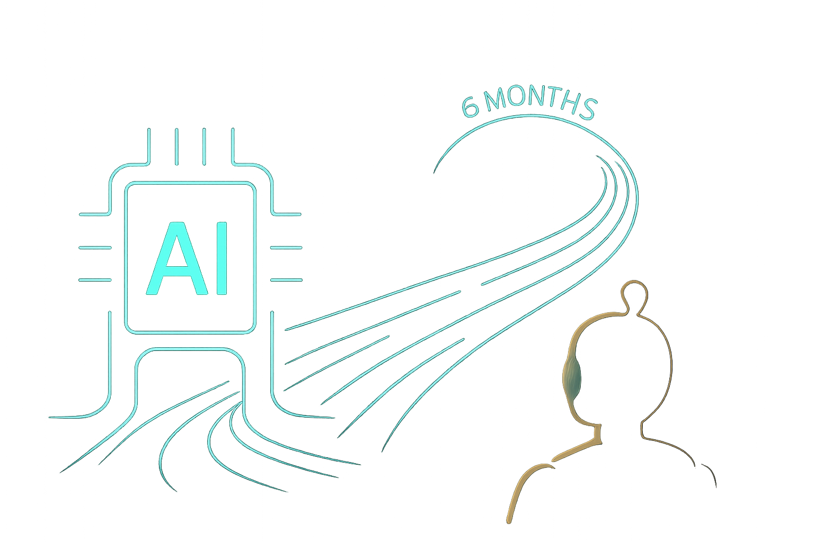
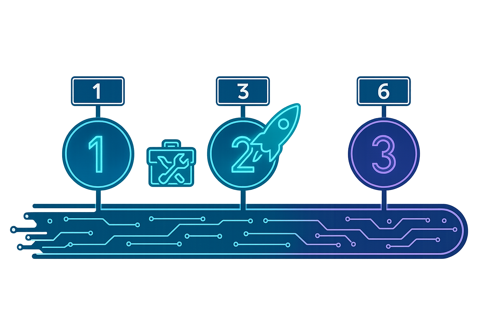
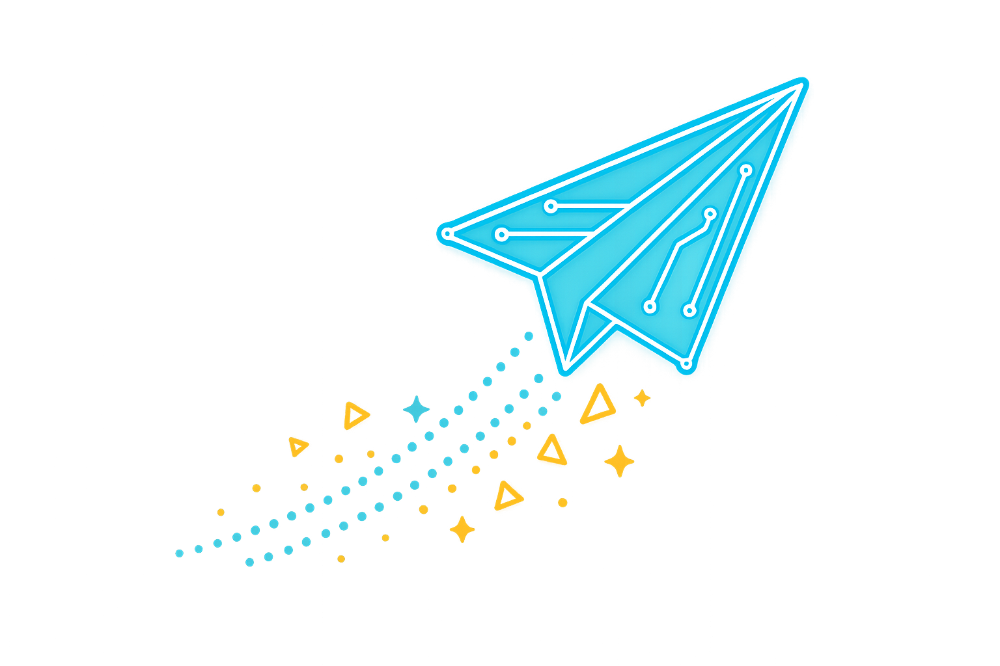

תוכנית הטמעת בינה מלאכותית יוצרת
מפת דרכים ואסטרטגית יישום
שילוב בינה מלאכותית יוצרת במחזור חיי פיתוח התוכנה של איתוראן טק
תוכנית 6 חודשים

סקירה כללית
תוכנית שילוב הבינה המלאכותית היוצרת מחולקת ל-3 שלבים אסטרטגיים המתוכננים להבטיח:
אימוץ חלק
תהליך הדרגתי ומובנה להטמעת כלי AI בכלל הצוותים
תוצאות מדידות
מדדים ברורים להערכת השיפור בפריון, איכות הקוד, זמני פיתוח, בדיקות, כתיבת מסמכים, וכו׳
בניית יכולות ארגוניות
פיתוח מיומנויות, תשתיות וידע לטווח ארוך בתחום ה-AI
שלב 1: תשתיות ומוכנות
חודשים 1-2
הקמת ממשל ומדיניות AI
הקמת ועדת היגוי ייעודית ל-AI
ניסוח הנחיות מקיפות לאבטחה, שימוש אתי, והגנת מידע
הערכת וקביעת כלי AI
בחירת כלי AI מיטביים לשימושים ספציפיים בצוותים, כלים שיעמדו במדינות השימוש
הגדרת גישה מאובטחת ושילוב בסביבות הפיתוח
תוכנית הכשרה בסיסית
סדנאות היכרות עם יסודות הבינה המלאכותית היוצרת
הדרכות בטכניקות ניסוח הנחיות (prompting)
זיהוי ותכנון פרויקטי פיילוט
בחירת פרויקטים ראשוניים בכל צוות עם תוצאות מדידות
פיתוח קריטריוני הצלחה ומדדי בסיס להערכת יעילות
שלב 2: יישום פיילוטים ממוקדים
חודשים 3-4
הפעלת פיילוטים
יישום כלי AI בפרויקטים נבחרים בכל צוות
ניטור ומדידת שיפורים בפריון, איכות ואימוץ
פיתוח ספריית הנחיות (prompts)
יצירת ספריות הנחיות מותאמות לתחומי הפעילות
ייעול תהליכי עבודה והעלאת אפקטיביות תוצרי ה-AI
משוב והתאמות שוטפות
הקמת פורומים ומנגנוני משוב מובנים מהמפתחים
שיפור תהליכי העבודה ותבניות הנחיות (prompting) בהתאם למשוב
אימות ממשל ואבטחה
ביצוע סקירות וביקורות מקיפות של השימוש בכלי AI
וידוא עמידה במדיניות האבטחה וצמצום סיכונים
שלב 3: הטמעה כלל-ארגונית ואופטימיזציה
חודשים 5-6
פריסה מורחבת בכל הצוותים
הרחבת שילוב ה-AI מפרויקטי פיילוט ליישום ארגוני רחב
שילוב מלא בתהליכי הפיתוח היומיומיים
הכשרות מתקדמות ובניית מיומנויות
השקת סדנאות הכשרה מתקדמים למשתמשים מתקדמים
הקמת מסלולי הסמכה פנימיים לעידוד מומחיות ב-AI
שילוב ב-CI/CD ואוטומציה
הטמעת כלי AI בתהליכי CI/CD לשיפור יעילות ואבטחה
אוטומציה של בקרה על איכות הקוד ועמידה בסטנדרט האירגוני, זיהוי פגיעויות ומנגנוני התראה
ניטור ביצועים והערכת ROI
מדידת השפעות שילוב ה-AI מול מדדי ההצלחה שהוגדרו
תיעוד ניתוחי ROI מקיפים וכימות השיפורים
לוח זמנים ליישום
תוכנית 6 חודשים
1
שלב 1: תשתיות ומוכנות
חודשים 1-2
הקמת ממשל ומדיניות AI
הגדרת והקמת כלים
הכשרה בסיסית
זיהוי פרויקטי פיילוט
2
שלב 2: יישום פיילוטים
חודשים 3-4
הפעלת פיילוטים
פיתוח ספריות prompts
איסוף משוב והתאמות
אימות ממשל ואבטחה
3
שלב 3: הטמעה כלל-ארגונית
חודשים 5-6
פריסה בכל הצוותים
הכשרות מתקדמות
שילוב ב-CI/CD
מדידת ROI ותכנון המשך

סיכום וצעדים להמשך
חזון ארוך טווח
הפיכת איתוראן טק למובילה בתחום שילוב בינה מלאכותית בתהליכי פיתוח תוכנה, תוך יצירת יתרון תחרותי משמעותי.
גורמי הצלחה קריטיים
מחויבות הנהלה ותמיכה ארגונית
הכשרה והעצמה של צוותי הפיתוח
שיתוף פעולה בין-צוותי
מדידה שיטתית והתאמות מבוססות נתונים
תוצאות צפויות
העלאת פריון הפיתוח ב-30% לפחות
שיפור איכות הקוד וצמצום פגמים
האצת זמן הגעה לשוק במוצרים חדשים
חיסכון בעלויות פיתוח ותחזוקה לטווח ארוך
הצעדים הבאים
קביעת פגישת התנעה עם מנהלי הצוותים לתחילת שלב 1 והקמת ועדת ההיגוי ל-AI עד סוף החודש הנוכחי.
בהצלחה!
